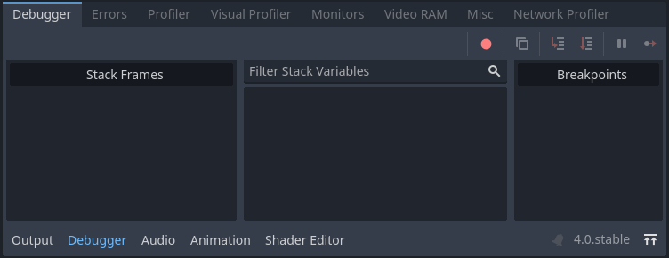
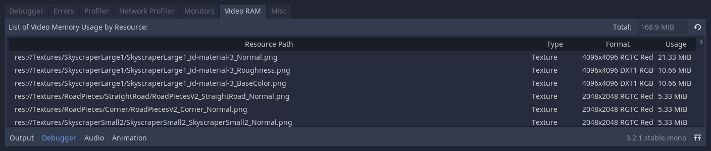

Debugger panel
Many of Godot's debugging tools, including the debugger, can be found in the debugger panel at the bottom of the screen. Click on Debugger to open it.

The debugger panel is split into several tabs, each focusing on a specific task.
Stack Trace
The Stack Trace tab opens automatically when the GDScript compiler reaches a breakpoint in your code.
It gives you a stack trace, information about the state of the object, and buttons to control the program's execution. When the debugger breaks on a breakpoint, a green triangle arrow is visible in the script editor's gutter. This arrow indicates the line of code the debugger broke on.
Tip
You can create a breakpoint by clicking the gutter in the left of the script editor (on the left of the line numbers). When hovering this gutter, you will see a transparent red dot appearing, which turns into an opaque red dot after the breakpoint is placed by clicking. Click the red dot again to remove the breakpoint. Breakpoints created this way persist across editor restarts, even if the script wasn't saved when exiting the editor.
You can also use the breakpoint keyword in GDScript to create a
breakpoint that is stored in the script itself. Unlike breakpoints created by
clicking in the gutter, this keyword-based breakpoint is persistent across
different machines when using version control.
You can use the buttons in the top-right corner to:
Skip all breakpoints. That way, you can save breakpoints for future debugging sessions.
Copy the current error message.
Step Into the code. This button takes you to the next line of code, and if it's a function, it steps line-by-line through the function.
Step Over the code. This button goes to the next line of code, but it doesn't step line-by-line through functions.
Break. This button pauses the game's execution.
Continue. This button resumes the game after a breakpoint or pause.
Note
Using the debugger and breakpoints on tool scripts
is not currently supported. Breakpoints placed in the script editor or using
the breakpoint keyword are ignored. You can use print statements to
display the contents of variables instead.
Errors
This is where error and warning messages are printed while running the game.
You can disable specific warnings in Project Settings > Debug > GDScript.
Evaluator
This tab contains an expression evaluator, also known as a REPL. This is a more powerful complement to the Stack Variables tree available in the Stack Trace tab.
When the project is interrupted in the debugger (due to a breakpoint or script error), you can enter an expression in the text field at the top. If the project is running, the expression field won't be editable, so you will need to set a breakpoint first. Expressions can be persisted across runs by unchecking Clear on Run, although they will be lost when the editor quits.
Expressions are evaluated using Godot's expression language, which allows you to perform arithmetic and call some functions within the expression. Expressions can refer to member variables, or local variables within the same scope as the line the breakpoint is on. You can also enter constant values, which makes it usable as a built-in calculator.
Consider the following script:
var counter = 0
func _process(delta):
counter += 1
if counter == 5:
var text = "Some text"
breakpoint
elif counter >= 6:
var other_text = "Some other text"
breakpoint
If the debugger breaks on the first line containing breakpoint, the following
expressions return non-null values:
Constant expression:
2 * PI + 5Member variable:
counter,counter ** 2,sqrt(counter)Local variable or function parameter:
delta,text,text.to_upper()
If the debugger breaks on the second line containing breakpoint, the following
expressions return non-null values:
Constant expression:
2 * PI + 5Member variable:
counter,counter ** 2,sqrt(counter)Local variable or function parameter:
delta,other_text,other_text.to_upper()
Profiler
The profiler is used to see what code is running while your project is in use, and how that effects performance.
See also
A detailed explanation of how to use the profiler can be found in the dedicated The Profiler page.
Visual Profiler
The Visual Profiler can be used to monitor what is taking the most time when rendering a frame on the CPU and GPU respectively. This allows tracking sources of potential CPU and GPU bottlenecks caused by rendering.
Warning
The Visual Profiler only measures CPU time taken for rendering tasks, such as performing draw calls. The Visual Profiler does not include CPU time taken for other tasks such as scripting and physics. Use the standard Profiler tab to track non-rendering-related CPU tasks.
To use the visual profiler, run the project, switch to the Visual Profiler tab within the Debugger bottom panel, then click Start:

Visual Profiler tab after clicking Start, waiting for a few seconds, then clicking Stop
Tip
You can also check Autostart, which will make the visual profiler automatically start when the project is run the next time. Note that the Autostart checkbox's state is not preserved across editor sessions.
You will see categories and results appearing as the profiler is running. Graph lines also appear, with the left side being a CPU framegraph and the right side being a GPU framegraph.
Click Stop to finish profiling, which will keep the results visible but frozen in place. Results remain visible after stopping the running project, but not after exiting the editor.
Click on result categories on the left to highlight them in the CPU and GPU graphs on the right. You can also click on the graph to move the cursor to a specific frame number and highlight the selected data type in the result categories on the left.
You can switch the result display between a time value (in milliseconds per frame) or a percentage of the target frametime. The debugger/profiler_target_fps editor setting controls the target frametime value according to the specified FPS.
If framerate spikes occur during profiling, this can cause the graph to be poorly scaled. Disable Fit to Frame so that the graph will zoom onto the 60 FPS+ portion.
Note
Remember that Visual Profiler results can vary heavily based on
viewport resolution, which is determined by the window size if using the
disabled or canvas_items stretch modes.
When comparing results across different runs, make sure to use the same viewport size for all runs.
Visual Profiler is supported when using any rendering method (Forward+, Mobile or Compatibility), but the reported categories will vary depending on the current rendering method as well as the enabled graphics features. For example, when using Forward+, a simple 2D scene with shadow-casting lights will result in the following categories appearing:

Example results from a 2D scene in the Visual Profiler
To give another example with Forward+, a 3D scene with shadow-casting lights and various effects enabled will result in the following categories enabled:

Example results from a 3D scene in the Visual Profiler
Notice how in the 3D example, several of the categories have (Parallel) appended to their name. This hints that multiple tasks are being performed in parallel on the GPU. This generally means that disabling only one of the features involved won't improve performance as much as anticipated, as the other task still needs to be performed sequentially.
Note
The Visual Profiler is not supported when using the Compatibility renderer on macOS, due to platform limitations.
Network Profiler
The Network Profiler contains a list of all the nodes that communicate over the multiplayer API and, for each one, some counters on the amount of incoming and outgoing network interactions. It also features a bandwidth meter that displays the total bandwidth usage at any given moment.
Note
The bandwidth meter does not take the High-level multiplayer API's own compression system into account. This means that changing the compression algorithm used will not change the metrics reported by the bandwidth meter.
Monitors
The monitors are graphs of several aspects of the game while it's running such as FPS, memory usage, how many nodes are in a scene and more. All monitors keep track of stats automatically, so even if one monitor isn't open while the game is running, you can open it later and see how the values changed.
See also
In addition to the default performance monitors, you can also create custom performance monitors to track arbitrary values in your project.
Video RAM
The Video RAM tab shows the video RAM usage of the game while it is running. It provides a list of every resource using video RAM by resource path, the type of resource it is, what format it is in, and how much Video RAM that resource is using. There is also a total video RAM usage number at the top right of the panel.

Misc
The Misc tab contains tools to identify the control nodes you are clicking at runtime:
Clicked Control tells you where the clicked node is in the scene tree.
Clicked Control Type tells you the type of the node you clicked is.